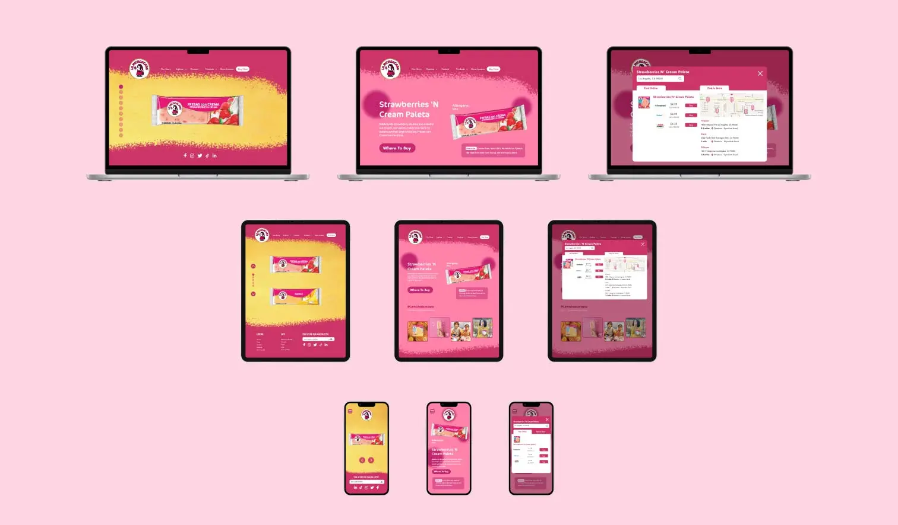
La Michoacana Website Redesign
Overview
I redesigned La Michoacana company's cluttered and outdated interface through a revamped Home page, Product page, and various Product description pages, ultimately enhancing brand identity and fueling interest in the company's products to drive increased sales.
Intro
As the final project for my UI Design class, I redesigned the website of La Michoacana, a Mexican-inspired ice cream retailer across desktop, tablet, and mobile interfaces. The original website can be found here: Michoacana.com.
Since the company's goal is to promote the popular Mexican tradition of eating paletas (popsicles), its existing customer base is Latinos and Hispanics. I identified the target user as a Hispanic mom living in the U.S., who wants to remain connected to her culture.
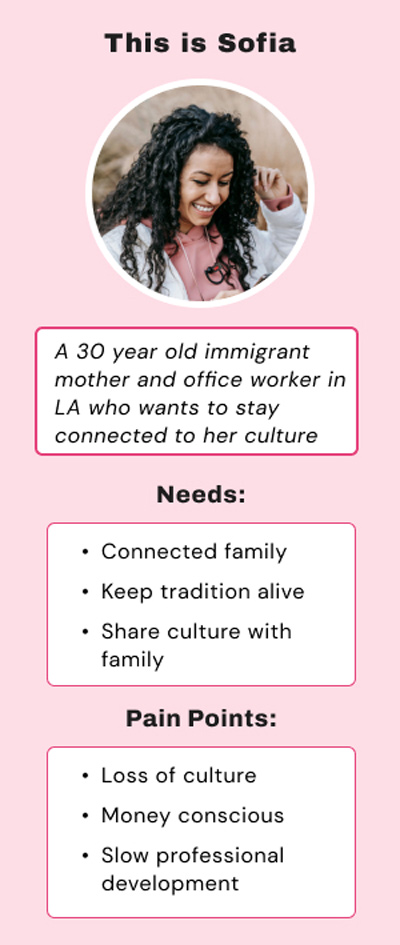
Critique
Although the website has vibrant colors that help to convey its brand identity, by the bottom half of the homepage there are too many colors to look at and the brand image gets lost in the colors of the different background images.
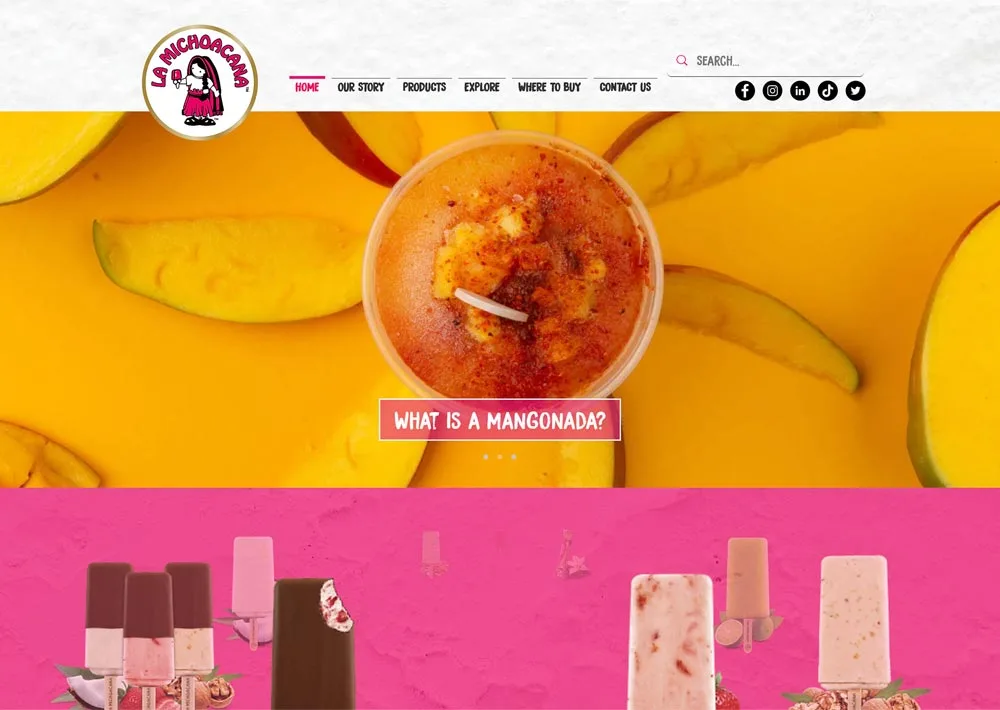
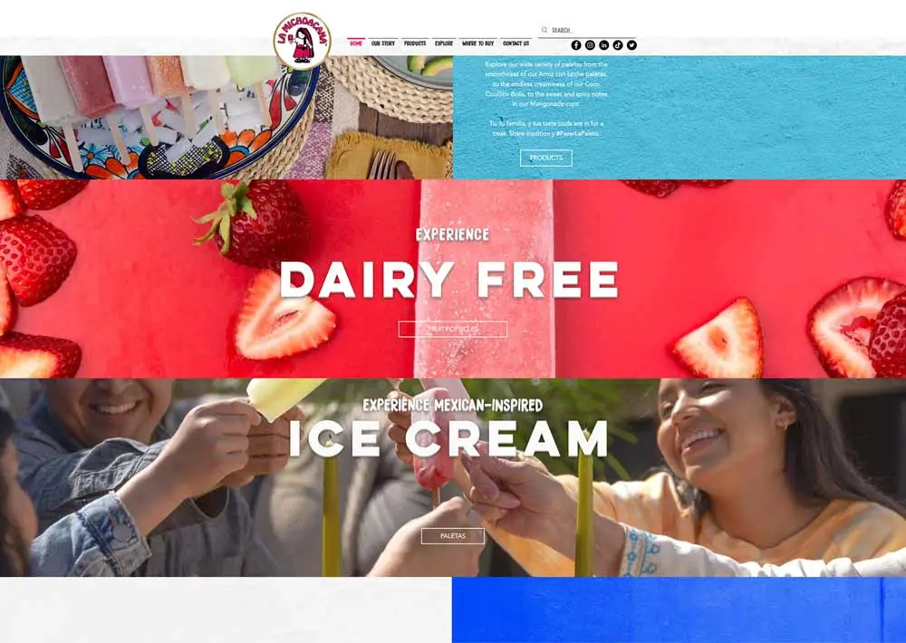
Not enough emphasis is placed on where to buy products, as the company chooses to promote blog posts first on the homepage.
After organizing a card sort, I changed the information architecture of the website to focus more on the company's products.
WireframesMy first wireframes
Based on the results of my card sort, I created the initial wireframes for the home page. Content wise, I added a new Our Purpose section and removed the original website's carousel of blog posts. I did this with the intent of listening to the users and displaying more engaging content.
While I explored the content and appearance differently, I admittedly stuck too close to the original website design, and sought to improve my design by continually ideating and asking questions.
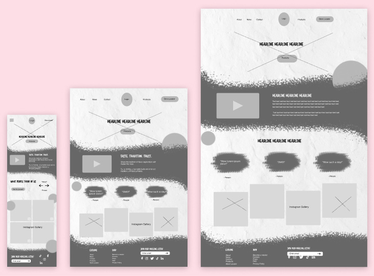
Reevaluating the design
Through Figma, I redesigned new and existing pages of the website and enhanced the website's branding overall across three interfaces.
For example, in my atomic design system I determined the two colors hot pink and bright yellow best represent La Michoacana's brand. Hot pink is the color most featured in their current logo and website, and yellow signifies the tropical fruit flavors that the company is most recognizable for.
Furthermore, I strategically altered the typography in the redesign to better reflect the playful personality of the previous website, focusing on a brush font to encourage that message and using a sans-serif font for the copy to maintain readability.
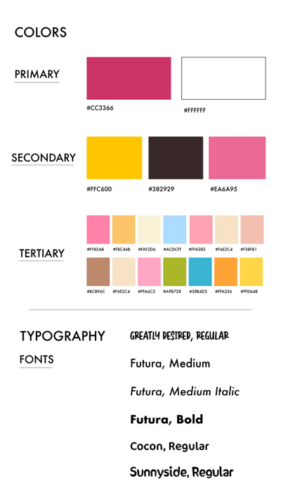
Improving the customer journey
Other changes made include a showing clearer separation of content, adding signifiers where necessary, and following touch-size targets in the buttons to adhere to usability standards.
My user journey consists of learning about the company through an Our Story page, navigating to the Products page of product types offered, pressing popsicles and looking at the different flavors in the Popsicle Flavors page, then finding out how to purchase the product in the Product Description page.
- The experience of product discovery is improved through Figma-animated microinteractions in the Popsicle Flavors page, increasing more space in the Product Description page, and utilizing a textured Photoshop brush background throughout the site.
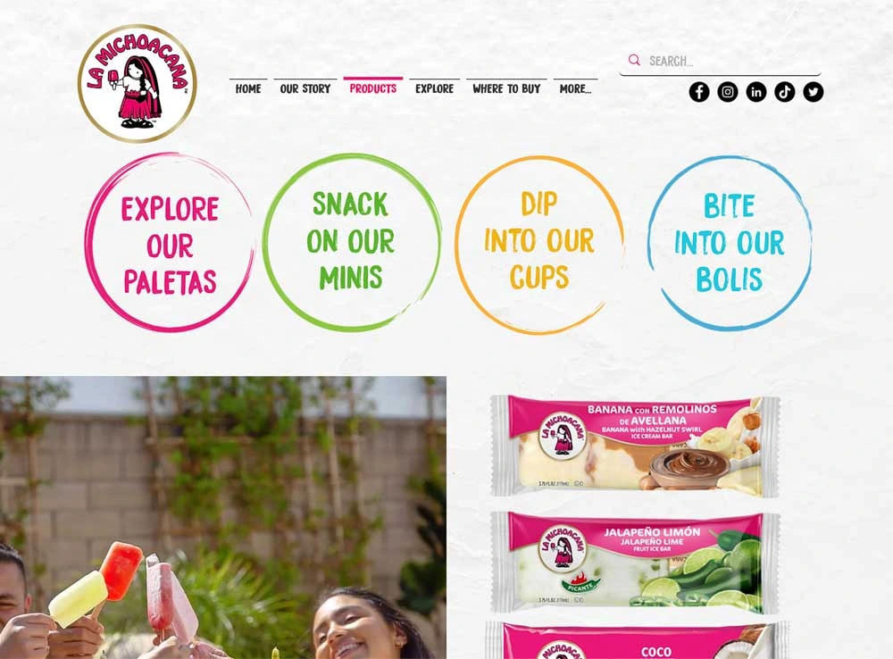
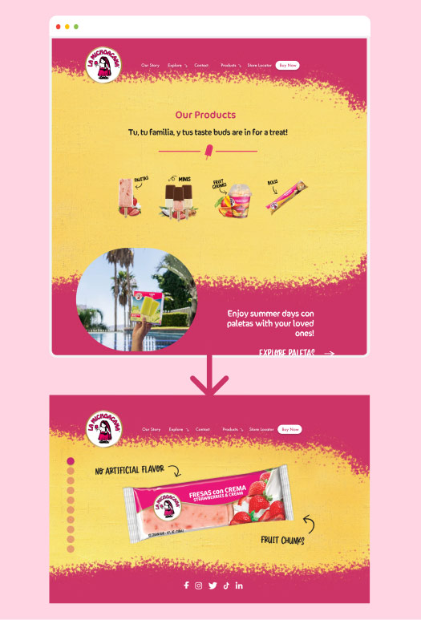
The user discovers products in a more engaging format
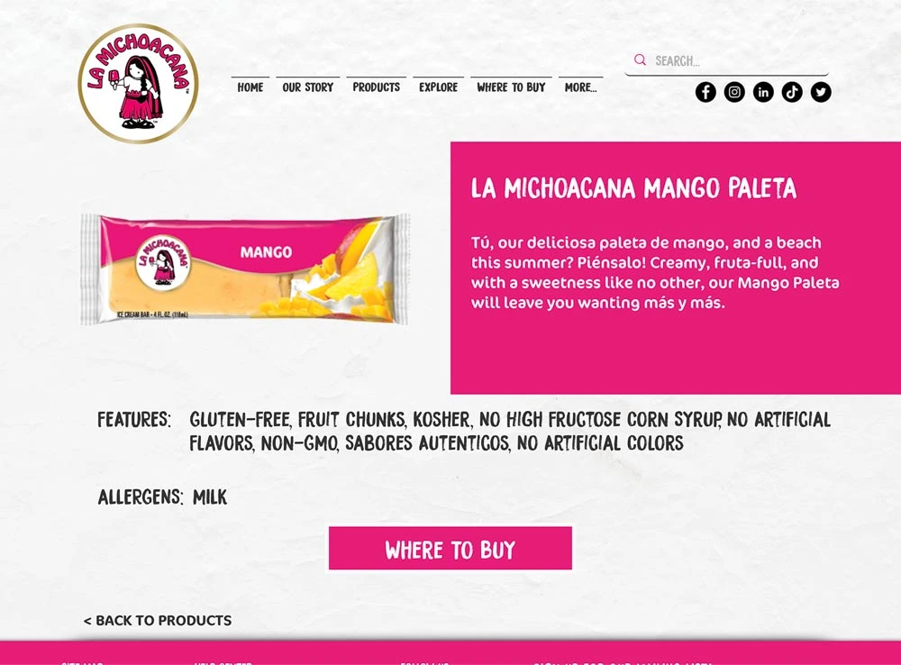
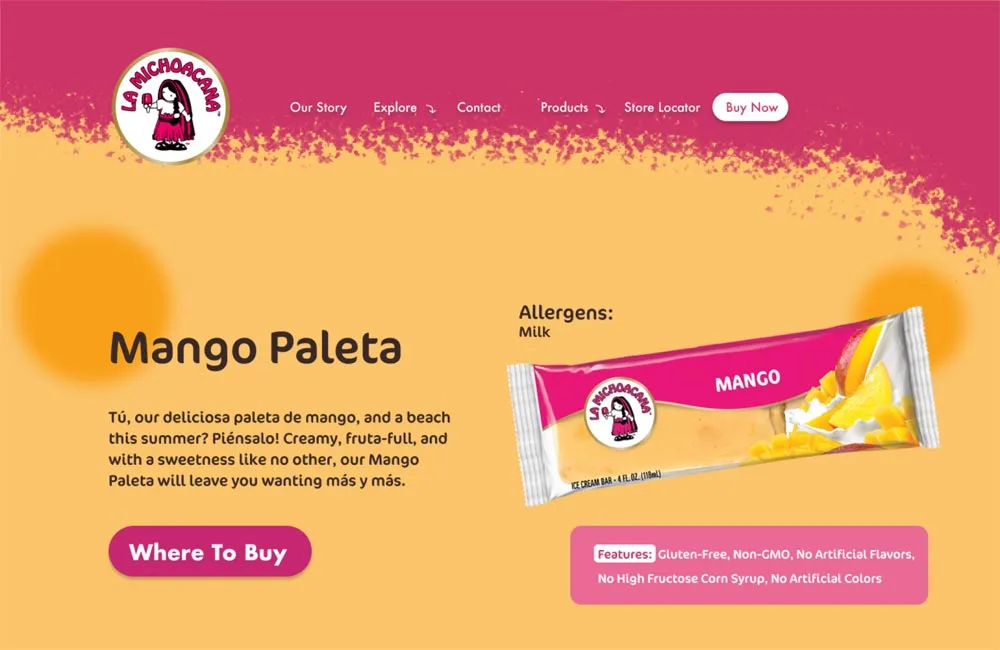
Before and after of the Product Description page
The SolutionFinal Mockups
Below is this product discovery user flow illustrated in all three devices. I encourage you to visit my prototypes to discover my animations which enhanced this flow.
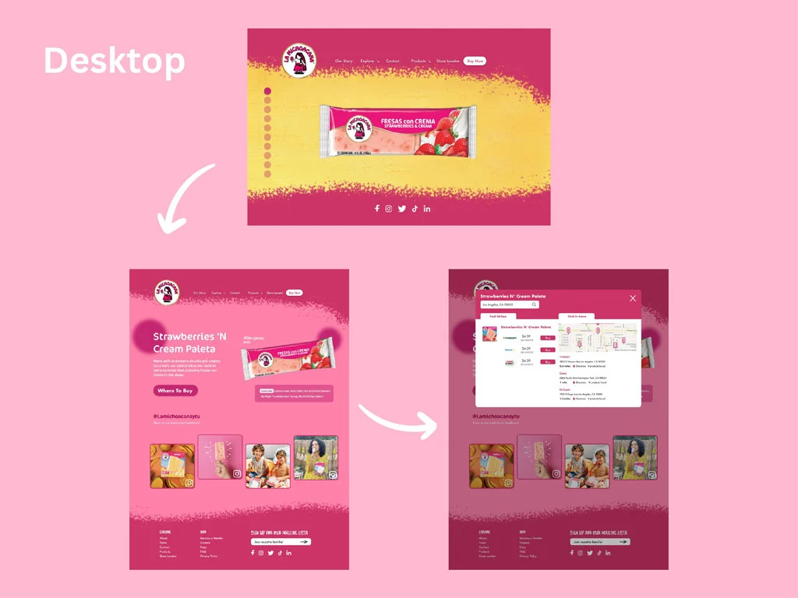
Desktop Mockup
Explore Prototype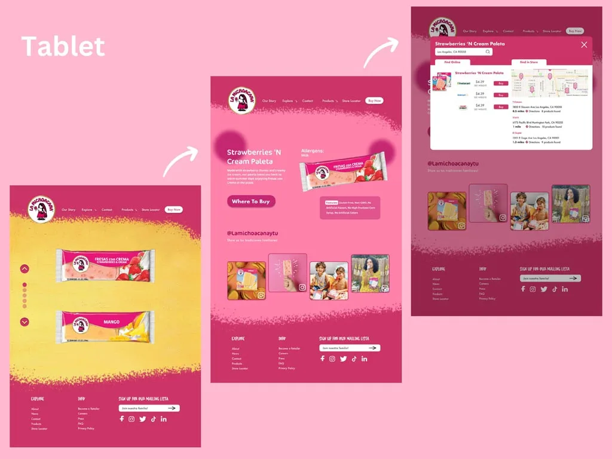
Tablet Mockup
Explore Prototype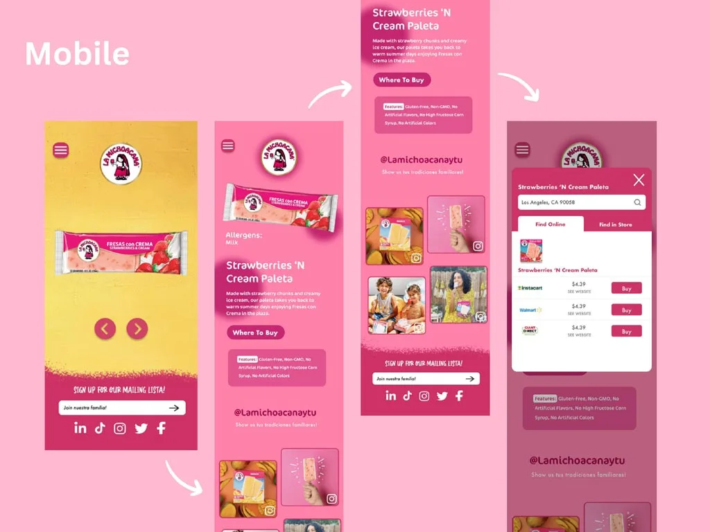
Mobile Mockup
Explore PrototypeBuilding a responsive design proved exciting
This project pushed me to explore designing on multiple sizes, and how best to utilize the space given. Overall, I am proud of how I reflected the company's branding through strategic typography and creative graphical designs to define the look of the website. I learned more about Figma animations, and how to utilize them to intrigue the user.
If I could go back on my work, I would conduct another card sort to evaluate the IA further. I realized it's never wrong to engage in user testing multiple times since it produces designs better informed by their target user.
I have much more to learn about how UX intermingles with UI design and I am excited about future opportunities in this field.
To further understand the interface I have redesigned and the user journey I have illustrated, I urge you to explore my prototypes on Figma.